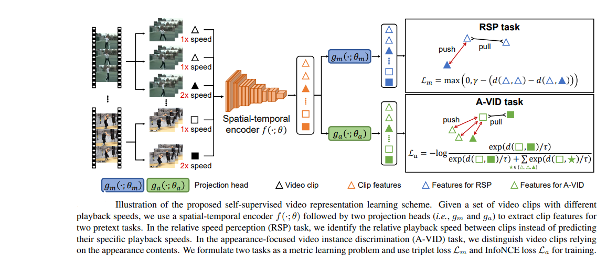

This applies contrastive loss in both spatial and temporal domain.
Clips are samples from a same video to analyze the relative
speed between them. A triplet loss pulls the clips with same
speed together and pushes clips with different speed apart
in the embedding space. To learn spatial features, InfoNCEloss is applied. Clip from same video are positives
whereas clips from different videos are negatives.
More details can be found
here.
